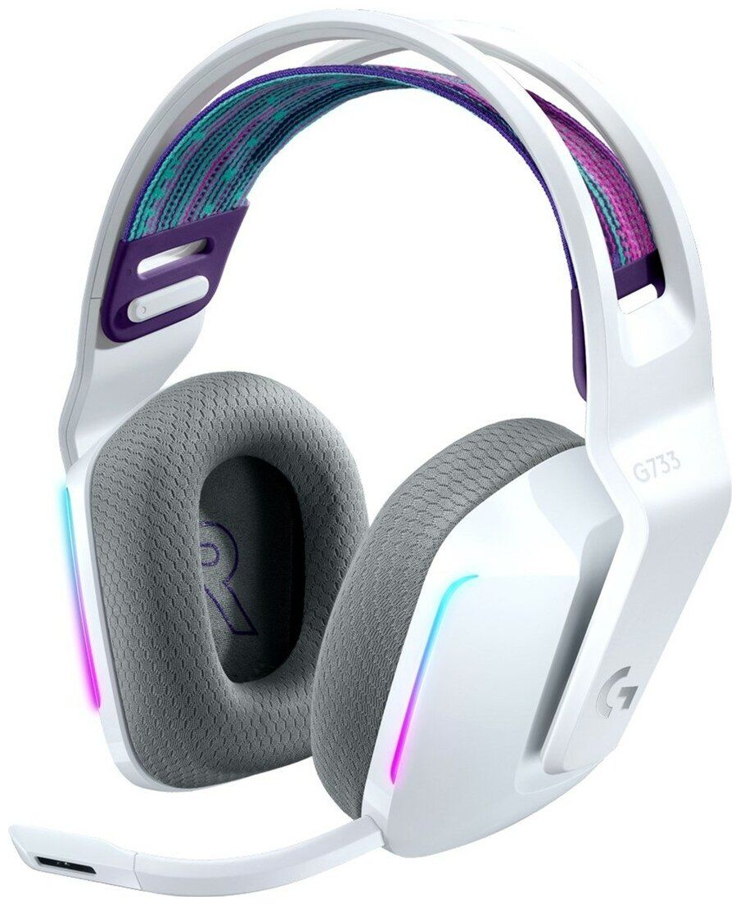
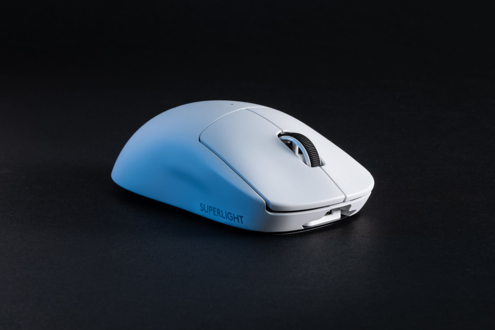

Logitech G733 LIGHTSPEED
|  | Динамик: Настраиваемый динамический, 40 мм Тип: Охватывающие, закрытого типа Частотная характеристика: 20 Гц – 20 кГц Импеданс: 39 Ом Масса: 278 г Тип подключения: Беспроводные Время работы: до 29 часов Радиус беспроводной связи: 20 м Комплектация: USB ресивер, кабель для зарядки, микрофон |
Logitech G733 LIGHTSPEED — игровая гарнитура для ПК с объемным звуком 7.1. Данная модель выполнена в белом цвете с нейтральными серыми вставками, обладает ярким фиолетово-розовым оголовьем, а также RGB-подсветкой, благодаря чему вы без труда сможете подчеркнуть свою индивидуальность и утонченный вкус. Помимо этого, наушники отличаются эргономичностью, что обеспечит удобство продолжительного использования.
Logitech PRO X SUPERLIGHT
|  | Эргономичность: Симметричная Датчик: HERO 25K Разрешение: До 25600 точек на дюйм Ускорение: 40G Вес мыши: 63 г Кнопки: 5 Тип соединения: Беспроводная Время работы: до 70 часов Частота опроса: 1000 Гц Гарантия: 1 год |
Logitech PRO X SUPERLIGHT облаченная в удобный для хвата корпус лаконичного черно-белого цвета, подойдет не только для повседневной работы за компьютером, но и для развлечений, включая прохождение игр различных жанров.